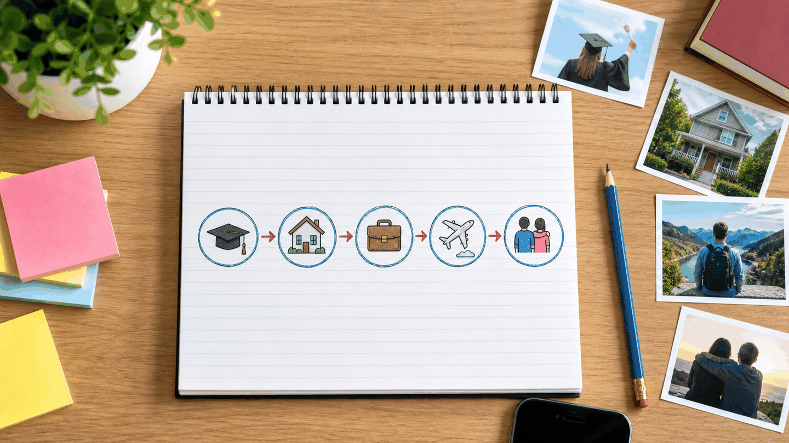

01
Purpose
Order Experiences in a Timeline
You have not talked to your best friend for a long time. Recently, you arranged a meeting to catch up. Both of you have experienced important events, and you want the other person to hear the new stories you have to tell.
Classroom instructions
- Students choose their conversation partner. The teacher may adjust pairs if necessary.
- The conversation lasts between 5 and 7 minutes.
- Each participant keeps the conversation friendly, natural, and pleasant.
- Each participant shares experiences in successful chronological order.
- The teacher only redirects the conversation if students need support.
